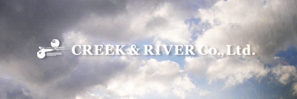

VISION と MISSION
クリエイターに対して一生涯、サービスを提供し続ける体制を整える
クリエイターの生涯価値の向上とクライアントの価値創造への貢献
クリーク･アンド･リバー社はクリエイターを支援することで人と社会の豊かさを創生することを理念とし、日本初のクリエイター・エージェンシーとして1990年3月に創業しました。現在では国内外に約35,000人のクリエイターと1,000社に及ぶ制作プロダクションをパートナーとし、国内外に8社の子会社を擁する企業グループへと進化を続けています。
クリーク・アンド・リバー社の2大ミッションは、「クリエイターの生涯価値の向上」と「クライアントの価値創造への貢献」です。才能豊かなクリエイターを発掘し、育て、支援し、活躍できる環境を構築していくこと。そして、その才能を組み合わせることにより新たな価値を生み出し、私たちに関わる全ての方の幸せを追求していきます。「クリエイター･エージェンシー」はクリエイター側からみれば「生涯価値の向上をサポートする機関」であり、クライアント側からみれば「価値創造への貢献を実現するサービスプロバイダー」です。
クリーク･アンド･リバー社のビジネスモデル3つの柱
- エージェンシー事業
- ライツ事業
- 教育・コミュニケーション事業
各事業の説明
- エージェンシー事業
- エージェント業務、プロデュース業務など。
- ライツ事業
- クリエイターの持つ作品等に有する著作権などの管理・流通・販売。
- 教育・コミュニケーション事業
- クリエイターの生涯価値を高める教育・自己研鑽の機会の提供など。